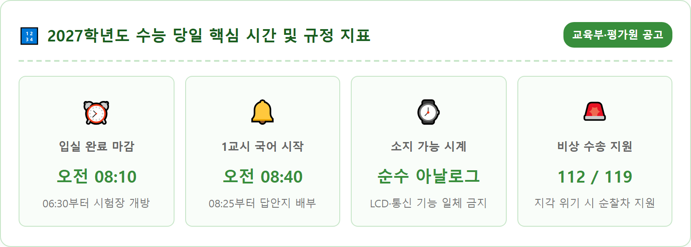
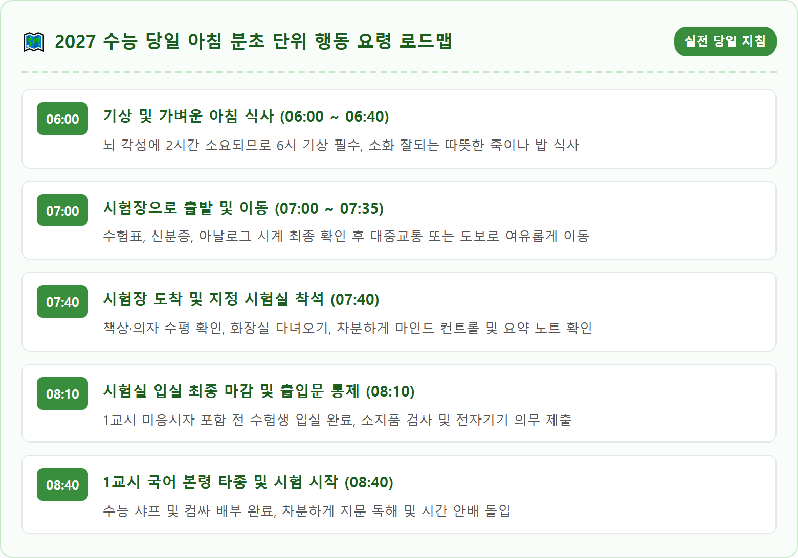
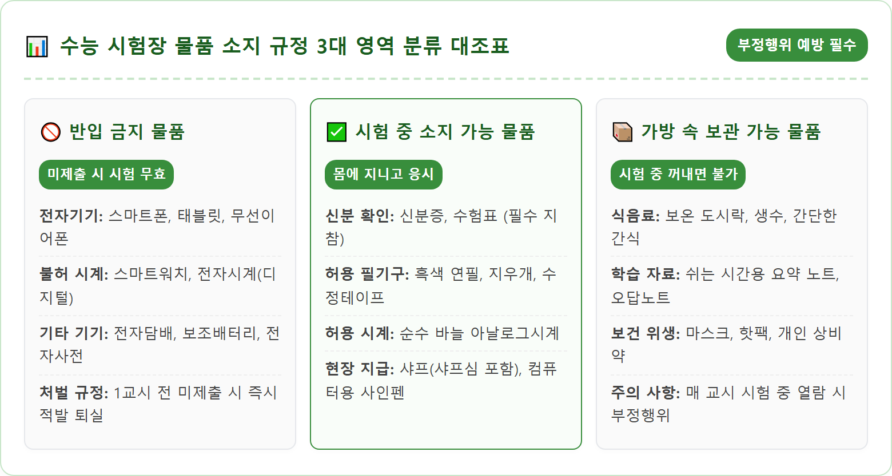
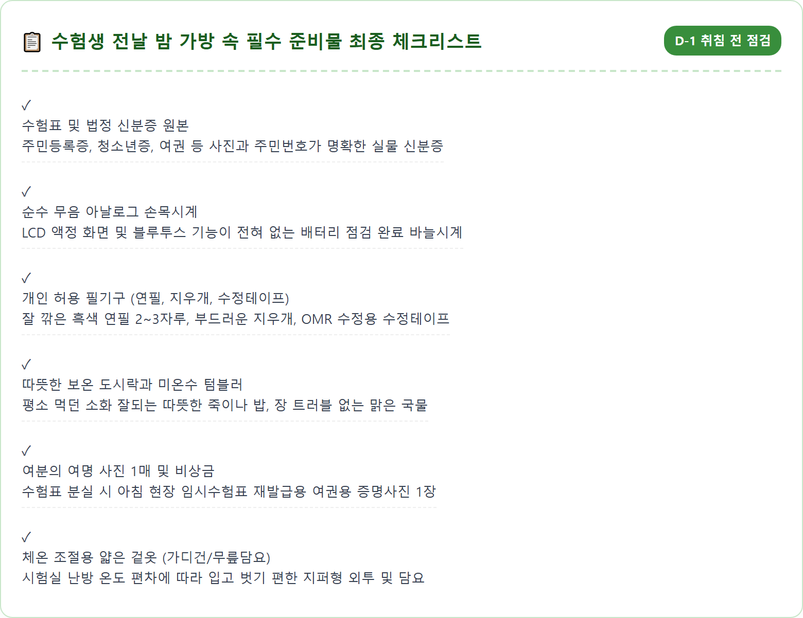
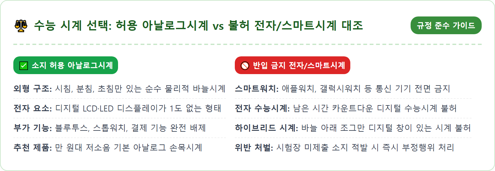
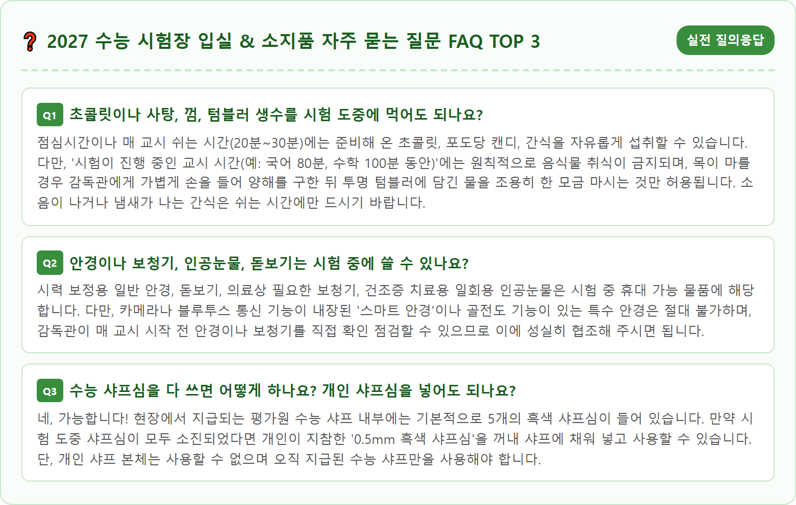

A serious and realistic close-up shot of a Korean high school student's desk on the morning of the College Scholastic Ability Test (CSAT). Neatly arranged on the wooden desk are the official exam slip (test registration card), a national identification card, a black computer marker, a wooden pencil, a white eraser, and a classic pure analog wristwatch with simple metal hands and no digital display. Soft natural morning sunlight streams in from a classroom window in the background. Clean composition, photorealistic, 8k resolution, crisp focus on the analog watch and exam materials, calm and focused atmosphere.

2026년 11월 19일 목요일, 전국의 수십만 수험생들이 지난 학창 시절의 모든 땀과 열정을 쏟아붓는 2027학년도 대학수학능력시험이 전국 지정 고사장에서 일제히 치러집니다. 수능 시험 당일 아침 수험생과 학부모가 가장 엄격하게 준수해야 할 제1원칙은 바로 **'오전 8시 10분까지 지정된 시험실 입실 완료'** 규정입니다.
시험장 학교 건물은 당일 오전 6시 30분부터 개방됩니다. 너무 일찍 도착하는 것도 긴장감을 높이고 쌀쌀한 아침 날씨에 체온을 떨어뜨릴 수 있지만, 입실 마감에 임박하여 8시 언저리에 헐레벌떡 도착하는 것은 뇌의 인지 기능과 호흡을 불안정하게 만들어 1교시 국어 영역에 치명적인 악영향을 미칩니다. 전문가들은 입실 마감 30분 전인 **오전 7시 30분에서 7시 40분 사이**에 시험실에 도착하는 것을 '황금 시간대'로 권장합니다.
시험실에 7시 40분경 안착해야 본인의 수험번호가 부착된 책상과 의자의 흔들림을 미리 점검하고, 화장실 위치를 파악하며, 준비해 온 요약 노트를 훑어보면서 차분하게 심호흡을 할 수 있는 30분의 귀중한 '멘탈 예열 시간'을 확보할 수 있습니다. 8시 10분이 지나면 시험장 정문이 통제되고 본인 확인 절차가 본격적으로 시작되므로 절대로 1분이라도 지체해서는 안 됩니다.
2027학년도 수능은 오전 8시 40분 1교시 국어 영역을 시작으로 오후 5시 45분 5교시 제2외국어/한문 영역까지 장장 9시간이 넘는 마라톤 레이스로 진행됩니다. 각 교시별 본령 타종 시각과 시험 시간은 철저하게 통제되며, 매 교시 시작 10분 전까지는 반드시 자신의 좌석에 착석해야 합니다.
- 1교시 국어: 08:40 ~ 10:00 (80분)
- 2교시 수학: 10:30 ~ 12:10 (100분)
- 점심시간: 12:10 ~ 13:00 (50분, 개인 도시락 취식)
- 3교시 영어: 13:07 ~ 14:20 (70분, 13:07부터 듣기평가 방송 진행)
- 4교시 한국사 및 탐구: 14:50 ~ 16:37 (107분, 한국사 필수 응시 후 탐구 선택)
- 5교시 제2외국어/한문: 17:05 ~ 17:45 (40분, 미응시자 대기실 대기 후 조기 퇴실)
여기서 많은 수험생들이 혼선을 빚는 중요한 규정이 바로 '1교시 국어 미응시자'의 입실 시간입니다. 수시 최저학력기준 등을 이유로 1교시 국어를 선택하지 않은 수험생이라 할지라도 시험장에 늦게 출근하듯 올 수 있는 것이 아닙니다. 1교시 미응시자 역시 **모든 수험생과 똑같이 오전 8시 10분까지 배정된 시험실에 정상 입실**하여 수험표 및 본인 확인을 거친 후, 감독관의 인솔에 따라 지정된 '대기실'로 이동하여 2교시 시작 전까지 대기해야 합니다. 이를 어길 경우 시험 응시 자격 자체가 제한될 수 있으므로 주의해야 합니다.

수능 시험장에서 매년 가장 안타깝게 발생하는 부정행위 적발 사례의 70% 이상은 놀랍게도 '시험장 반입 금지 물품을 가방에 넣어두었다가 적발되는 경우'입니다. 수험생 본인은 부정행위를 할 의도가 전혀 없었더라도, 규정된 전자기기를 소지하고 있는 행위 그 자체만으로 고등교육법령에 따라 **당해 연도 시험이 전면 무효 처리**되는 엄벌을 받게 됩니다.
교육부와 한국교육과정평가원이 고시한 **'시험장 반입 금지 물품'**은 다음과 같습니다:
- 휴대전화(스마트폰 및 피처폰 일체)
- 스마트기기(스마트워치, 스마트밴드, 태블릿PC 등)
- 디지털카메라, 캠코더, 전자사전, 전자계산기, MP3 플레이어, PMP
- 블루투스 이어폰(에어팟, 버즈 등 무선 이어폰 일체) 및 블루투스 헤드셋
- 전자담배(아이코스, 릴, 액상형 전자담배 일체)
- 결제 및 통신(블루투스 등) 기능 또는 전자식 화면 표시기(LCD, LED)가 있는 시계
이들 물품은 원칙적으로 시험장에 아예 가져오지 않는 것이 가장 안전합니다. 만약 등굣길 연락 등을 위해 부득이하게 시험장에 가져왔다면, 반드시 **1교시 시작 전(08:10~08:25 사이) 감독관의 안내에 따라 전원을 완전히 끈 후 제출**해야 합니다. 만약 가방에 넣어두었더라도 제출하지 않고 시험장 내에 보관하다가 적발되거나 시험 도중 알람이나 진동이 울리면 즉시 현장에서 부정행위자로 간주되어 퇴실 조치 및 시험 무효 처분을 받게 되므로 각별히 명심해야 합니다.
수능 시험장 교실에는 시계가 원칙적으로 비치되어 있지 않거나, 비치되어 있더라도 시간 오차로 인한 분쟁을 방지하기 위해 감독관이 종이로 가려두는 경우가 일반적입니다. 따라서 수험생 본인이 개인 시계를 지참하여 교시별 남은 시간을 스스로 안배하는 것이 절대적으로 중요합니다.
하지만 시계의 종류에 대한 규정은 매년 극도로 엄격해지고 있습니다. 수능 시험실에서 소지할 수 있는 유일한 시계는 **'통신·결제 기능(블루투스 등) 및 전자식 화면 표시기(LCD, LED 등)가 전혀 없는 순수 기계식 아날로그시계'**뿐입니다. 즉, 초침·분침·시침이 물리적으로 돌아가는 전통적인 바늘시계만 휴대 가능합니다.
많은 수험생들이 실수하는 대표적인 예가 '카시오(CASIO) 수능 시계' 중 바늘 아래쪽에 조그맣게 날짜나 디지털 숫자가 표시되는 '하이브리드 시계'입니다. 시계판 안에 단 1mm의 액정 화면(LCD)이라도 포함되어 있다면 크기와 관계없이 무조건 반입 금지 물품으로 분류됩니다. 또한 스마트워치(애플워치, 갤럭시워치 등)의 화면을 아날로그 바늘 테마로 바꿔놓았다 하더라도 전자기기이므로 즉시 부정행위가 됩니다. 반드시 1만~2만 원대의 단순한 무음 아날로그 손목시계를 사전 준비해 초침 소리가 거슬리지 않는지 며칠 전부터 미리 차고 연습하는 것이 좋습니다.

수능 시험실에서는 시험의 공정성을 위해 수험생들에게 공식 필기도구를 현장에서 일괄 지급합니다. 1교시 시작 전 모든 수험생에게는 '한국교육과정평가원 전용 수능 샤프 1자루(흑색 샤프심 5개 내장)'와 '검은색 컴퓨터용 사인펜 1개'가 기본 지급되며, 시험실당 5개씩의 흰색 수정테이프가 비치되어 감독관에게 요청 시 언제든 빌려 쓸 수 있습니다.
그렇다면 수험생이 개인적으로 챙겨가 시험 중에 책상 위에 올려놓고 사용할 수 있는 필기도구는 어디까지일까요? 교육부 공식 지침상 시험 중 수험생이 개인 지참할 수 있는 물품은 다음과 같습니다:
- 신분증 (주민등록증, 운전면허증, 기간 만료 전 여권, 청소년증 등)
- 수험표
- 흑색 연필 및 지우개 (수학 풀이나 국어 지문 밑줄용으로 매우 유용)
- 0.5mm 흑색 샤프심 (지급된 샤프 안에 보충하여 사용 가능)
- 흰색 수정테이프 (개인용 지참 가능하며 OMR 답안지 수정 시 본인 것 사용 권장)
- 순수 아날로그시계
반대로 **개인이 가져온 샤프, 볼펜, 형광펜, 예비 마킹용 플러스펜** 등은 시험 중에 책상 위에 올려두거나 소지해서는 안 됩니다. 특히 개인 샤프를 몰래 사용하다가 감독관에게 적발되면 압수 조치되며, 이중 마킹이나 OMR 판독 오류의 원인이 되는 개인 유색 필기구 사용은 본인에게 심각한 불이익으로 이어질 수 있습니다. 시험 중에는 반드시 평가원 지급 수능 샤프와 컴퓨터용 사인펜, 그리고 허용된 개인 흑색 연필만을 사용하시기 바랍니다.
해마다 수능이 끝나면 '엄마가 도시락 가방에 넣어준 휴대전화에서 알람이 울려 시험이 무효 처리되었다', '깜빡 잊고 주머니에 무선이어폰을 넣고 있다가 금속탐지기에 걸렸다'는 가슴 아픈 사연들이 뉴스에 보도됩니다. 수능 시험장 복도와 고사장 입구에서는 수능 부정행위 방지를 위해 이동식 금속탐지기 검색이 불시에 이루어지며, 시험 도중 감독관의 육안 점검도 철저하게 진행됩니다.
현행 고등교육법 제34조 제4항 및 교육부 훈령에 따르면, 시험장 반입 금지 물품을 1교시 시작 전 감독관에게 제출하지 않고 임의로 소지하고 있는 행위는 고의성 유무를 불문하고 **'부정행위'**로 확정됩니다. 이 경우 수험생이 작성한 당일 모든 영역의 시험 답안은 전액 0점 처리되며, **당해 연도 수능 응시 자체가 무효**가 됩니다.
만약 다른 수험생에게 무전이나 인터넷을 통해 답안을 전송받거나 사전에 계획된 조직적 부정행위를 저지른 경우에는 당해 시험 무효는 물론 향후 1년간 수능 응시 자격이 원천 정지되는 형사 고발 수준의 중벌을 받게 됩니다. 따라서 시험 당일 1교시 본령이 울리기 전, 감독관이 "반입 금지 물품 제출하라"고 공지할 때 주머니와 가방을 다시 한번 샅샅이 뒤져 전자기기를 100% 제출하는 것만이 지난 수년간의 노력을 안전하게 지키는 유일한 길입니다.

수능 당일 아침 시험장에 도착했는데 수험표가 보이지 않거나 집에서 깜빡 잊고 출발했다는 사실을 깨달았을 때, 당황하여 집으로 다시 되돌아가서는 절대로 안 됩니다. 되돌아가다가 8시 10분 입실 시간을 놓쳐 시험을 아예 치르지 못하는 비극이 발생할 수 있기 때문입니다.
수험표를 분실했더라도 당황하지 마시고 **오전 7시 30분까지 해당 시험장의 '시험관리본부'**로 곧바로 찾아가면 현장에서 즉시 **'임시 수험표'**를 재발급받을 수 있습니다. 시험장 교문 안으로 들어가 안내 교사에게 "수험표를 분실했습니다"라고 말하면 1층에 마련된 시험관리본부로 신속하게 안내해 줍니다.
임시 수험표를 재발급받기 위해서는 **본인의 신분증(주민등록증·청소년증 등)**과 **응시원서에 부착했던 동일한 규격의 여권용 사진 1매**가 필요합니다. 만약 사진마저 챙겨오지 못했더라도 시험관리본부에서 수험생 본인 확인 서약서 작성 및 임시 확인 절차를 거쳐 시험 응시가 가능하도록 적극적인 행정 지원을 제공하므로, 절대로 겁먹거나 당황하지 말고 침착하게 시험관리본부의 문을 두드리시기 바랍니다.
수능 당일 아침은 전국의 관공서와 주요 기업체의 출근 시간이 오전 10시로 1시간 늦춰지고, 지하철과 시내버스가 집중 배차되지만 예상치 못한 교통사고나 기상 악화, 지하철 지연 등으로 인해 입실 마감 8시 10분에 쫓기는 돌발 위기 상황이 언제든 발생할 수 있습니다.
이럴 때는 주저하지 말고 즉시 **경찰 비상 전화 112 또는 소방 긴급 전화 119**로 전화를 걸어 도움을 요청해야 합니다. 경찰청은 수능 당일 전국 주요 지하철역 환승 거점과 주요 교차로마다 '수험생 비상 수송 거점'을 설치하고 경찰 순찰차와 기동대 싸이카, 모범운전자회 차량을 대규모로 전진 배치합니다.
112에 전화를 걸어 "수능 수험생인데 현재 OO역 인근에서 극심한 정체로 입실이 촉박합니다"라고 위치를 정확히 알리면, 가장 인접한 순찰차가 즉시 출동하여 사이렌을 울리며 시험장 정문 앞까지 안전하고 신속하게 에스코트 수송을 지원합니다. 또한 주요 지하철역 출구 앞에는 '수험생 무료 수송 순찰차'가 대기하고 있으므로, 시간이 촉박할 경우 정복 경찰관에게 수험표를 보여주고 순찰차에 탑승하여 이동하면 지각 위기를 극복할 수 있습니다.

대학수학능력시험이라는 거대한 시험대에서 수험생이 지닌 본래의 실력을 온전히 100% 발휘하기 위한 마지막 퍼즐 조각은 바로 '마음의 평정심'입니다. 그리고 그 평정심은 수능 전날 밤 철저하고 빈틈없이 준비된 가방 속 준비물에서 비롯됩니다.
수능 전날 밤 9시 이전에는 공부 책상을 정리하고 가방 챙기기를 완료해야 합니다. 수험표와 신분증은 투명 지퍼백에 함께 담아 가방 앞주머니에 넣고, 아날로그시계의 배터리가 정상 작동하는지 시간을 맞추어 확인합니다. 깎아둔 연필과 지우개, 수정테이프를 필통에 정돈하고, 당일 입을 옷은 얇은 옷을 3~4겹 겹쳐 입을 수 있도록 미리 옷걸이에 걸어두세요.
자신을 믿고 깊은 잠을 청하시기 바랍니다. 긴 시간 동안 수없이 많은 문제집을 풀고 자신과의 싸움을 이겨내 온 여러분의 노력은 결코 배신하지 않을 것입니다. 시험 당일 아침, 여유 있는 걸음으로 7시 40분 고사장에 도착하여 스스로에게 "나는 충분히 준비되었고, 오늘 최고의 하루를 만들어낼 것이다"라는 당당한 주문을 걸어주세요. 전국의 모든 수험생 여러분의 빛나는 결실을 진심으로 뜨겁게 응원합니다.
